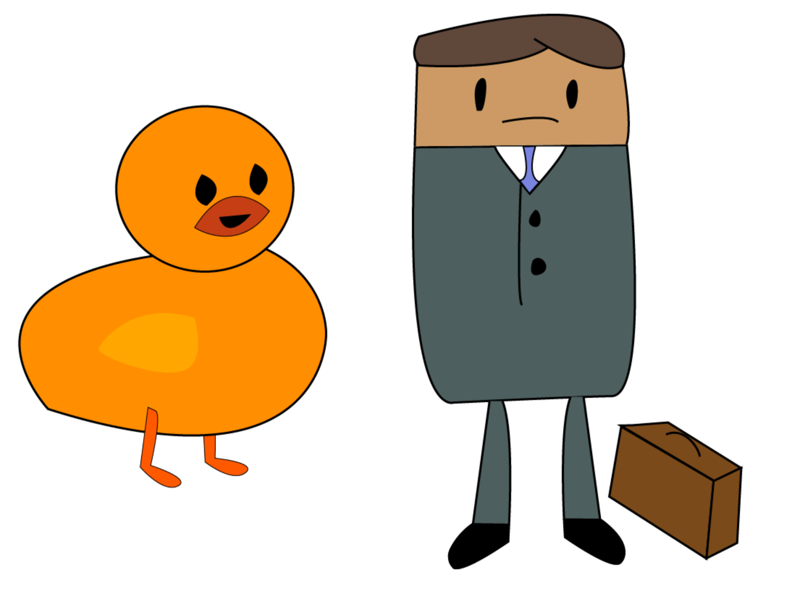

Egen animation
Intro
Vores første projekt i grundlæggende animation skulle vi lære at animere i HTML CSS og Javascript/jQuery. Vi fik til opgave at lave en kort fortælling som skulle kunne have 2 forskellige forgreninger af historien.
Jeg fandt på at lave en fortælling om en mand der fik valget om at hjælpe en and med sine ællinger over et gadekryds. Hvis man sagde ja til at hjælpe var der et coin-flip om en gamefisering eller at anden bliver hjulpet over. Hvis man sagde nej ville anden blive kørt ned.
Se det færdige resultat her
Proces
Projektets forløb:
- Ide, stilen, budskab, genrestemning og strukturen af historien
- Opstilling af flowchart
- Rentegne karakter og scenografi
- Lave simple flytte animationer i CSS
- Lave første simple walkcycle
- Lave resten af spritesheetet for dine karakterer
- CSS animationer
- Sømbræt
- Kodning af venstre ben af flowchart i jQuery
- Animation af komplet flowchart i jQuery
Skitser af karaktere
Rentegnede karaktere

Skitser, humør af karakter
Rolle
Da det var et individuelt projekt har jeg selv udarbejdet alt i produktionen af det endelige produkt.
Tools
I dette projekt har jeg arbejdet med
Programmering
- Brackets
- HTML5
- CSS
- jQuery / Javascript
Design
- InDesign
- Photoshop
- Illustrator
Optimering
Jeg havde mange sygedage under dette projekt. Jeg fik derfor ikke implementeret lyd, eller lavet sekvensdiagram. Men jeg fik lavet min historie færdig uden lyd. Der var også mindre problemer med mit spritesheet hvilket gjorde at nogle af karakterende hopper lidt på skærmen. Jeg fik heller ikke lavet en landing page til spillet hvor man kan trykke start. Jeg har dog læst op på hvordan man laver et spritesheet og hvordan man implementere lyd, samtidig er jeg også klar over hvad jeg havde lavet af fejl i mit spritesheet.